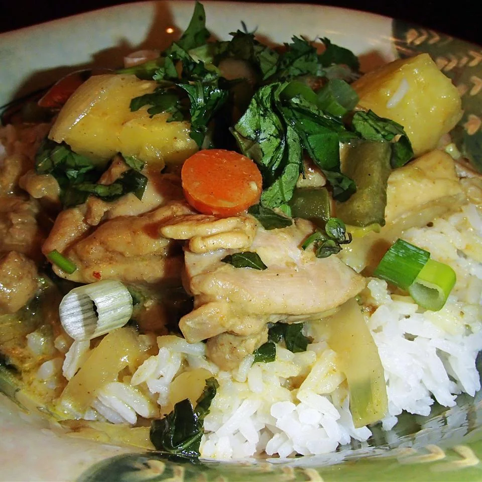

Thai Chicken Curry with Pineapple

Description
This chicken curry is made with coconut milk and sweetened with pineapple.
Ingredients
- 2 teaspoons curry powder
- 1 teaspoon curry paste
- 1 (13.5 ounce) can coconut milk
- 2 tablespoons fish sauce
- 1 tablespoon packed brown sugar
- 1 cup chicken stock
- 4 chicken thighs, cut into bite size pieces
- ½ cup frozen peas
- ½ cup chopped green bell pepper
- ½ cup chopped carrot
- 1 tablespoon cornstarch
- 2 tablespoons chicken stock
- ¾ cup chopped fresh pineapple
Directions
- Cook and stir the curry powder and curry paste in a saucepan over medium-low heat until fragrant, about 2 minutes. Pour the coconut milk into the saucepan and mix well. Stir in the fish sauce, brown sugar, and 1 cup chicken stock.
- Place the chicken thighs, peas, peppers, and carrots into the saucepan with the curry sauce. Bring the mixture to a boil over medium-high heat, then reduce the heat to low. Simmer until the chicken is cooked though, about 25 minutes.
- Whisk together 1 tablespoon of cornstarch with 2 tablespoons of cold chicken stock. Stir cornstarch mixture into the curry. Mix the pineapple into the curry and cook until the sauce thickens, about 5 minutes.
Original recipe is here.